공사 현장 정기 안전점검
건설 공사의 품질과 안전을 지키기 위해 위험 요소를 점검합니다
건설공사 정기안전점검은 무엇인가요?
다리, 터널, 댐, 도로, 항만, 건물 같은 공사는 시설 규모와 종류에 맞춰
국토교통부가 고시한 시기와 횟수대로 정기안전점검을 받아야 합니다.
건설기술진흥법 제62조에 따라 받는 점검으로, 공사 중 생길 수 있는 무너짐, 넘어짐, 떨어짐 같은 위험을 미리 살피고 관리하는 법정 안전관리 절차입니다.
건설공사 정기안전점검을 받는 까닭
현장이 실제로 안전한지 확인하려고 아래와 같은 목적으로 합니다.
| 구분 | 목적 | 내용 |
|---|---|---|
| 기술적 안전 | 구조적 건전성 확보 | 임시 구조물과 본 구조물이 제대로 시공됐는지 검토해 무너짐 사고 막기 |
| 현장 관리 | 건설사고 예방 | 공정마다 숨은 위험을 찾아내고 안전 대책이 정말 효과가 있는지 공학적으로 따지기 |
| 품질 확보 | 품질 관리 극대화 | 설계 도서와 실제 시공을 견줘 결함이 생길 싹 자르기 |
| 법적 준수 | 법적 리스크 해소 | 안 받으면 2년 이하 징역이나 2천만 원 이하 벌금 같은 처벌을 받을 수 있어 사업주를 지키는 일 |
현장 안전관리와 정기안전점검은 어떻게 다른가
현장 안전관리는 시공사가 늘 하는 안전관리 활동을 바탕으로 돌아갑니다.
정기안전점검은 그 관리가 법적 기준대로 되고 있는지 바깥 전문기관이 확인하는 제도적 안전장치입니다.
현장 안전관리와 정기안전점검 나란히 보기
| 구분 | 현장 자체 안전관리 | 바깥 기관이 와서 보는 점검 |
|---|---|---|
| 수행 주체 | 현장 안전관리자 | 안전진단 전문기관 |
| 점검 성격 | 일상적 현장 관리 | 법정 기준 기반 점검 |
| 핵심 역할 | 작업자 안전수칙 관리 | 임시 시설과 굴착 같은 위험 공정 점검 |
| 법적 효력 | 내부 관리 기록 | 건설기술진흥법에 맞춘 정식 점검 보고서 |
정기안전점검 대상과 시기
상하수도, 항만, 건물, 도로, 철도, 다리, 터널, 댐, 하천(수문·제방)처럼
토목 시설부터 건물까지 안전관리계획을 세워야 하는 공사라면 짓는 동안 정기안전점검을 받아야 합니다.
정기안전점검을 받는 현장
건설기술진흥법이 안전관리계획을 세우라고 정한
아래 현장은 꼭 정기안전점검을 받아야 합니다.
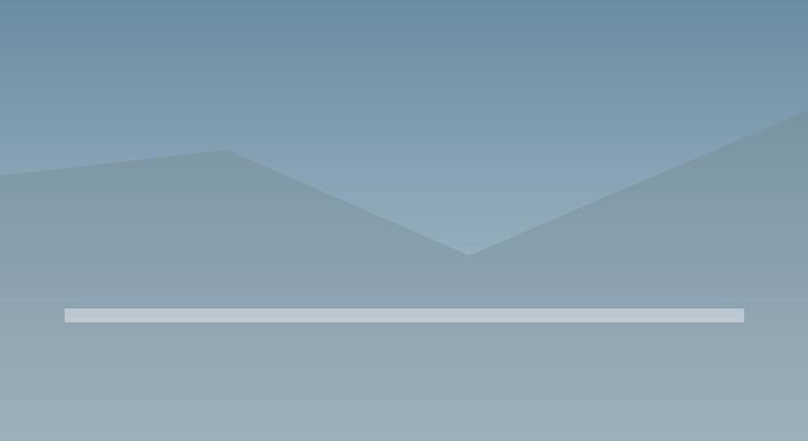
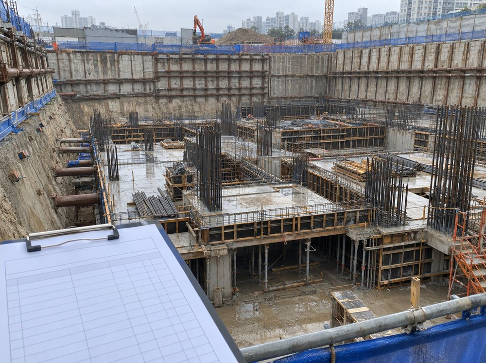
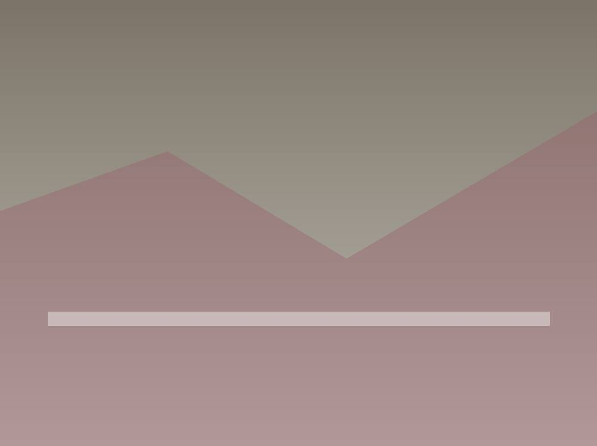
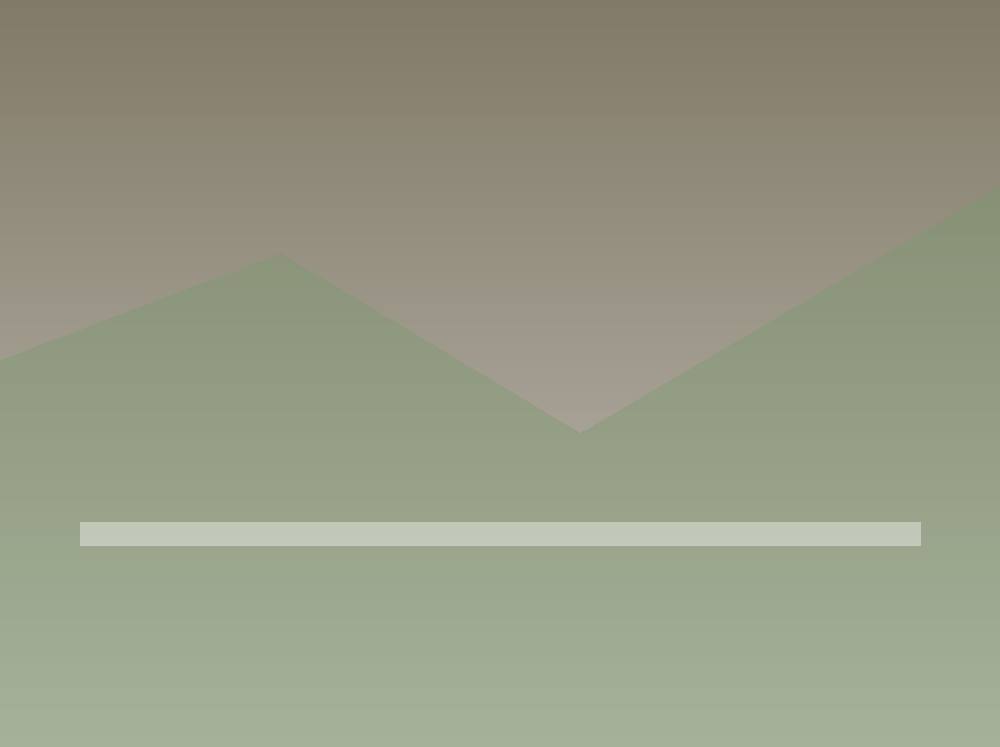
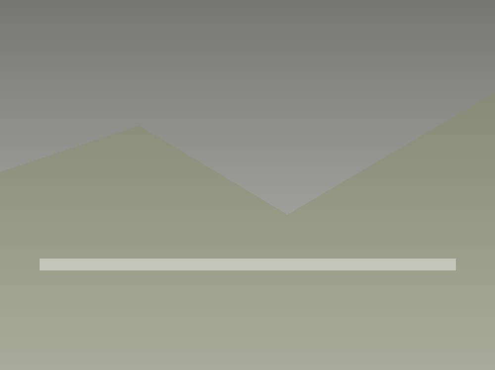
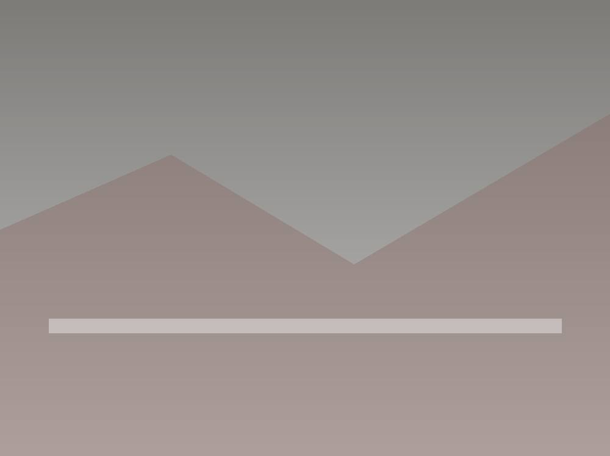
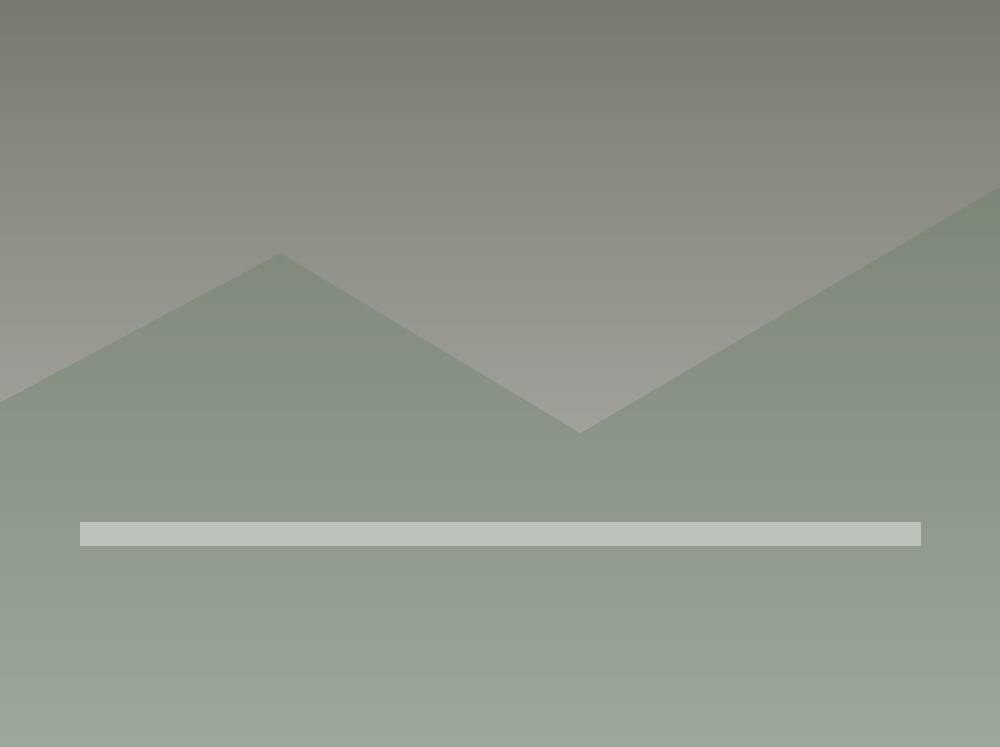
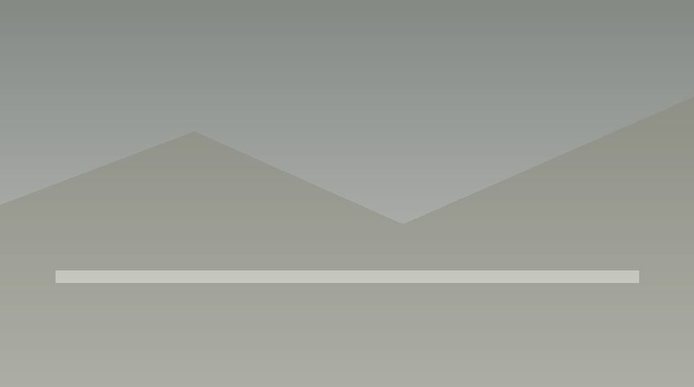
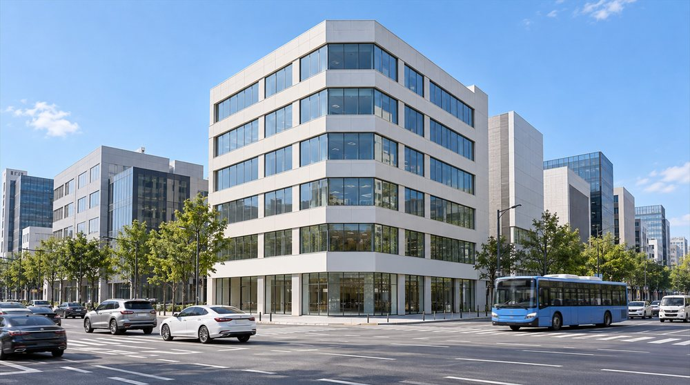
몇 번, 언제 받나
시설 종류에 따라 법이 정한 최소 점검 횟수를 꼭 지켜야 합니다.
| 건설공사 구분 | 1차 | 2차 | 3차 |
|---|---|---|---|
| 건축물 | 기초공사 (콘크리트 타설전) | 구조체공사 초 ∙ 중기 단계 | 구조체공사 말기 단계 |
| 건축물 리모델링 또는 해체공사 | 초 공정의 초 ∙ 중기 단계 | 초 공정의 말기 단계 | - |
| 지하차도, 지하상가 복개구조물 | 토공사 시공 시 | 총 공정의 중기 단계 | 총 공정의 말기 단계 |
| 10m 이상 굴축하는 건설공사 | 가시설공사 및 기초공사 시공시 (콘크리트 타설전) | 되메우기 완료 후 | - |
| 폭발물을 사용하는 건설공사 | 총 공정의 초 ∙ 중기 단계 | 총 공정의 말기 단계 | - |
| 천공기 (높이 10m 이상) | 천공기 조립 후 최초 작업 시 | 천공 작업 말기 단계 | - |
| 항타 및 항발기 | 항타 ∙ 항발기 조립 후 최초 작업 시 | 항타 ∙ 항발기 말기 단계 | - |
| 타워크레인 | 타워크레인 설치 작업 시 | 타워크레인 인상 시마다 | 타워크레인 해체 작업시 |
| 비계 (높이 31m 이상) | 비계 최초 설치 완료 시 | 비계 최고 높이 설치 완료 단계 | - |
| 거푸집 및 동 바리 (높이 5m 이상) | 설치 높이 가장 큰 구간 설치 완료 시 | 콘크리트를 붓는 단면이 가장 큰 구간을 다 설치했을 때 | - |
| 터널 지보공 | 지보공 설치 초기 단계 | 지보공 설치 말기 단계 | - |
| 흙막이 지보공 (높이 2m 이상) | 지보공 최초 설치 완료 시 | 버팀 구조를 거의 다 세운 마지막 단계 | - |
| 브라켓 비계 | 브라켓 최초 설치 완료 시 | 브래킷 비계를 다 설치했을 때 | - |
| 발판·난간 같은 안전 설비 일체화 가설 구조물 (10m 이상) | 최초 설치 완료 시 | 임시 구조물을 거의 다 쓴 마지막 단계 | - |
| 현장 조립 복합가설구조물 | 조립 ∙ 설치 최초 완료 시 | 임시 구조물을 거의 다 쓴 마지막 단계 | - |
공사 규모별 점검 시기 정하는 법
정확한 점검 시기는 착공 전에 세운 안전관리계획서와 공정표를 기준으로 정해집니다.
공정이 얼마나 됐는지, 언제 위험에 가장 많이 노출되는지를 중심으로 셈합니다.
공정이 4분의 1쯤, 절반 남짓, 거의 끝났을 때 한 번씩
큰 임시 구조물을 세운 뒤 땅을 팔 때처럼 사고 위험이 높은 때 실시
마지막 점검을 초기점검과 함께 해 앞으로 유지관리할 기준 자료 확보
짓는 동안 무엇을 보나
임시 시설과 흙막이 구조 점검
임시 시설은 본 구조물이 다 지어질 때까지 현장 안전을 지키는 중요한 구조입니다.
설계 기준과 견줘 제대로 시공됐는지 보고, 무게가 전달되는 방식과 변형될 가능성을 함께 분석합니다.
동바리끼리 가로로 잇는 부재가 제대로 붙었는지, 잭 받침이 바닥에 꼭 붙고 곧게 섰는지
벽에 묶는 간격을 지켰는지, 작업 발판이 단단히 고정됐는지
버팀대에 미리 힘을 걸어 두었는지, 이음 용접과 볼트가 제대로 조였는지
땅 파기와 지반 안정 관리
땅을 파는 단계에서는 지반이 꺼지거나 흙막이가 무너지는 큰 사고가 날 수 있어서
측정값과 현장에서 본 것을 함께 따져 움직임과 침하 낌새를 잡아내고 대응합니다.
흙막이 뒤쪽 땅에 금이 가거나 꺼지는 낌새가 없는지 계속 지켜보기
땅속 기울기계, 하중계, 지하수위계가 잘 도는지, 관리 기준을 넘지 않았는지 분석
흙막이 벽으로 물이 새지 않는지, 물 빼는 설비가 잘 돌아가는지 점검
뼈대 공사 때 보는 것
뼈대 공사는 건물이 구조적으로 얼마나 튼튼할지 정하는 중요한 단계라
설계 기준에 맞게 정확히 지었는지, 무게를 버티는 요소가 제대로 들어갔는지 보며 구조 결함이 생길 가능성을 짚습니다.
도면과 견줘 철근 굵기, 간격, 묻는 길이와 잇는 길이가 맞는지
콘크리트를 부을 때 재료가 갈라지지 않게 했는지, 굳히는 동안 온도와 습도를 잘 관리했는지
주요 구조부가 설계 치수대로 됐는지, 수직·수평이 맞는지 재기
안전관리계획서대로 하고 있는지 점검
안전관리계획서에 적힌 대로 하고 있는지 현장 모습과 견줘 기술적으로 따져 봅니다.
관련 법 기준과 시공 상태를 함께 분석해 보완할 점과 바로잡을 조치를 찾아냅니다.
추락 방지망, 안전 난간, 구멍 덮개 같은 법정 안전 시설을 설치했는지 확인
공정마다 세운 위험 방지 계획이 현장 사정에 맞게 돌아가는지 기술적으로 평가
안전진단 전문기관 온하임
법이 인정한 기관, 최고 등급 기술진
온하임은 시설물안전법과 건설기술진흥법이 정한 까다로운 기준을 통과해 면허를 받은 안전진단전문기관입니다.
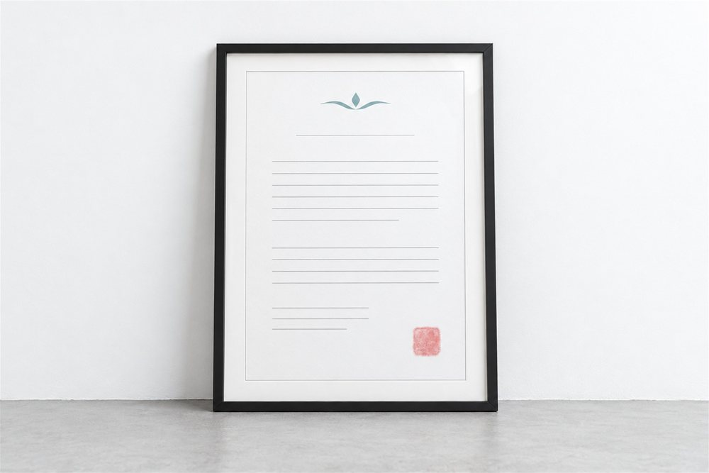

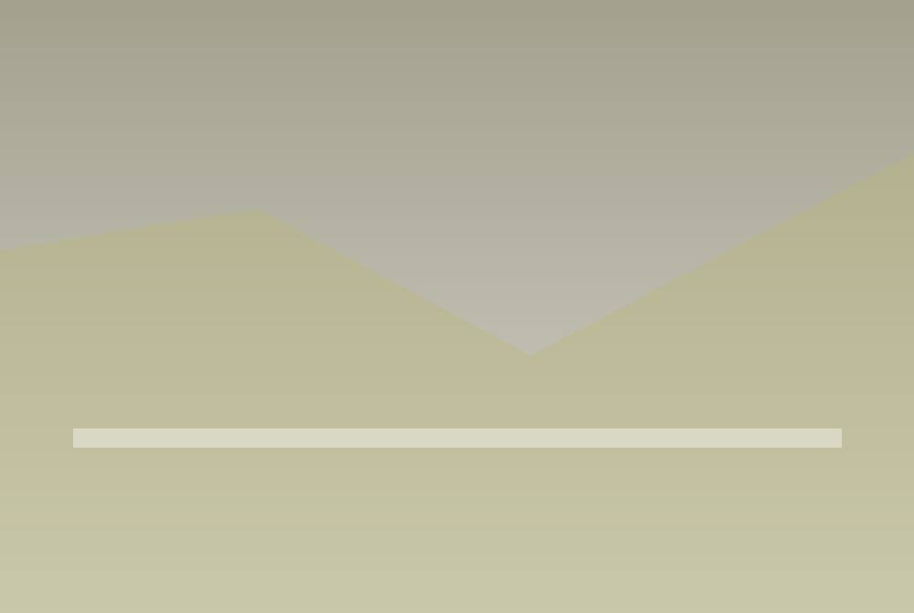
정기안전점검은 이렇게 진행됩니다
서류 검토, 현장 조사, 위험 요소 추리기를 거쳐
보고서를 내기까지 정해진 순서를 차근차근 밟습니다.
- 안전관리계획서 검토
- 점검 차수 및 시기 확정
- 공종별로 제대로 시공했는지 직접 재기
- 임시 구조물과 본 구조물 상태 조사
- 구조 안전성 계산 검토
- 위험 요인 대책 수립
- 법적 기준에 맞춘 결과 보고서 작성
수행 범위 및 기술 지원
현장에서 본 것을 토대로 뼈대가 튼튼한지, 자재가 상하지 않았는지 따지고,
시험·측정·해석 값을 모아 기술적 판단과 고칠 방향을 내놓습니다.
실제 하중 조건을 넣어 지금 상태에서 무게를 더 얹어도 안전한지 숫자로 셈합니다. 내하율을 구해 설계 기준보다 안전 여유가 얼마나 있는지 따져 봅니다.
입체 모델에 설계 하중을 넣어 구조물이 받는 힘과 변형을 해석합니다. 그렇게 약한 곳을 찾고 구조가 불안정해질 가능성을 따집니다.
콘크리트 시료 채취와 비파괴 시험으로 압축 강도와 재료 성능이 얼마나 떨어졌는지 평가합니다. 중성화 깊이와 염분을 분석해 철근이 녹슬 위험을 숫자로 셈합니다.
구조물의 수직 기울기와 수평 움직임을 재서 고르지 않게 가라앉았는지 판단합니다. 금의 모양과 커지는 정도를 분석해 구조에 영향을 주는 금인지 아닌지 나눕니다.
온하임이 맡아 온 건설공사 정기안전점검
여러 지역의 큰 아파트 단지부터 초고층 빌딩, 복합 물류센터,
토목 시설물까지 많은 현장의 정기안전점검을 맡아 왔습니다.
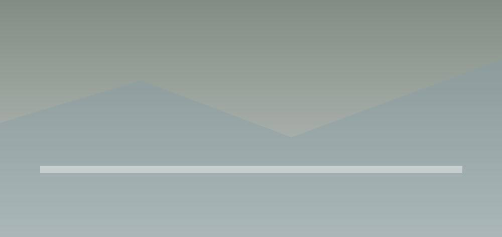
○○ 연구기관 청사
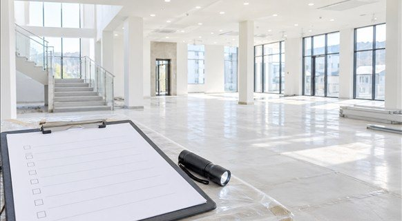
경기 용인 OO 사옥 신축 공사
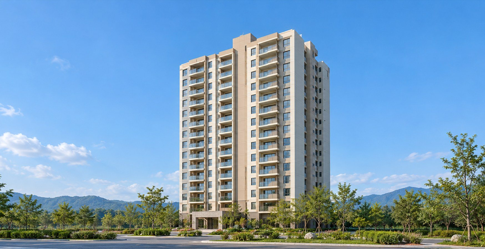
경기 안양 OO아파트
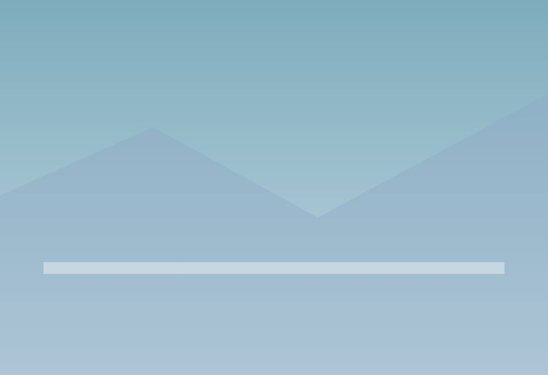
OO병원 증축 공사
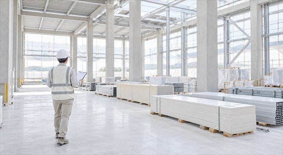
경기 화성 제약 공장 증축 공사
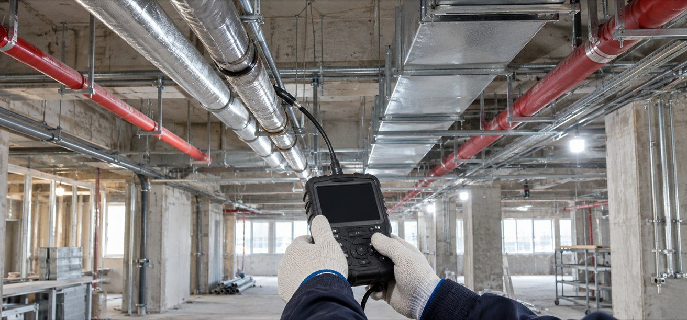
경기 여주 OO중 미래학교 증축 공사
궁금한 점을 한곳에 모았어요
- 01
공사 중 정기점검과 정밀점검은 어떻게 다르죠?
 A정기안전점검은 공사 종류와 규모에 따라 국토교통부가 고시한 시기와 횟수에 맞춰 공정 단계마다 받는 점검이고, 정밀안전점검은 정기점검에서 물리적·기능적 결함이 나와 보수나 보강이 필요할 때 이어서 하는 점검입니다. 정기점검이 눈으로 보는 검사와 비파괴 시험 같은 기본 조사로 시공 상태를 평가한다면, 정밀점검은 결함 원인을 조사하고 구조 계산이나 내하력 시험으로 안전성을 따져 보수·보강 방법까지 내놓아요. 둘 다 공사 중에 건설기술진흥법에 따라 받는 것이라, 다 지은 뒤 쓰고 있는 시설물을 시설물안전법에 따라 점검하는 제도와는 다릅니다. (근거: 건설기술진흥법 시행령 제100조, 같은 법 시행규칙 제59조, 건설공사 안전관리 업무수행 지침)
A정기안전점검은 공사 종류와 규모에 따라 국토교통부가 고시한 시기와 횟수에 맞춰 공정 단계마다 받는 점검이고, 정밀안전점검은 정기점검에서 물리적·기능적 결함이 나와 보수나 보강이 필요할 때 이어서 하는 점검입니다. 정기점검이 눈으로 보는 검사와 비파괴 시험 같은 기본 조사로 시공 상태를 평가한다면, 정밀점검은 결함 원인을 조사하고 구조 계산이나 내하력 시험으로 안전성을 따져 보수·보강 방법까지 내놓아요. 둘 다 공사 중에 건설기술진흥법에 따라 받는 것이라, 다 지은 뒤 쓰고 있는 시설물을 시설물안전법에 따라 점검하는 제도와는 다릅니다. (근거: 건설기술진흥법 시행령 제100조, 같은 법 시행규칙 제59조, 건설공사 안전관리 업무수행 지침) - 02
시공사가 알아서 아무 업체에 맡겨도 되나요?
A아니요, 건설공사 정기안전점검은 시설물안전법에 따라 등록한 안전진단전문기관이나 국토안전관리원만 할 수 있습니다. 시공사가 직접 고르는 게 아니라 발주자가 지정한 기관에 맡기고, 발주자가 발주청이 아니면 인허가기관장이 지정해요. 그 공사를 발주·설계·시공·감리하거나 건설사업관리를 맡은 회사의 계열사에는 맡길 수 없고, 점검은 안전점검 교육을 마친 해당 분야 특급기술인이 책임지고 합니다. 온하임은 시설물안전법과 건설기술진흥법 기준을 갖춘 안전진단전문기관이라 특급·고급 기술 인력이 점검을 맡아요. (근거: 건설기술진흥법 시행령 제100조, 건설공사 안전관리 업무수행 지침) - 03
준공 직전에 받는 초기점검은 정기점검과 따로인가요?
A네, 초기점검은 1종·2종 시설물 공사를 끝내거나 임시로 쓰기 바로 전에 받는 점검이라, 공정마다 받는 정기점검과 시기도 목적도 다릅니다. 법은 정기점검 수준 이상으로 하라고 정했고, 건설공사 안전관리 업무수행 지침은 이를 정밀점검 수준으로 해서 앞으로 점검과 진단에 쓸 처음 값을 확보하게 해요. 준공 전에 마치는 게 원칙이고, 그 전에 끝내기 어려운 공사는 발주자 승인을 받아 준공 뒤 3개월 안에 할 수 있습니다. (근거: 건설기술진흥법 시행령 제100조, 건설공사 안전관리 업무수행 지침) - 04
점검할 때를 놓쳤으면 나중에 받아도 되나요?
A아니요, 이미 지난 공정의 점검을 나중에 받아서 그때 받은 것으로 치기는 어렵습니다. 정기점검은 그 공종이 진행되는 동안 임시 구조물과 시공 상태를 직접 보는 점검이라, 다음 공정으로 덮인 곳은 같은 조건으로 다시 볼 수 없거든요. 안전관리계획에 따른 점검을 하지 않은 시공사는 건설기술진흥법상 2년 이하 징역이나 2천만 원 이하 벌금 대상이 될 수 있습니다. 빠진 걸 알았다면 바로 발주자와 감리자에게 알리고, 지금 공정에서 할 수 있는 점검과 추가 조사 범위를 의논해 기록으로 남겨 두세요. (근거: 건설기술진흥법 제88조, 같은 법 시행령 제100조, 건설공사 안전관리 업무수행 지침) - 05
한 현장에서 점검을 몇 번 받게 되나요?
A공사 종류와 규모에 따라 달라집니다. 건설공사 안전관리 업무수행 지침 별표 1이 구조물별 점검 시기를 정해 두었고, 발주청이나 인허가기관은 안전관리계획을 검토하며 공사 규모, 기간, 현장 사정에 맞춰 시기와 횟수를 조정할 수 있어요. 그래서 같은 건물이라도 현장마다 차수가 다르게 잡히고, 온하임은 착공 전 승인된 안전관리계획서와 공정표를 보고 점검 차수와 시기부터 확정합니다. (근거: 건설기술진흥법 시행령 제100조, 건설공사 안전관리 업무수행 지침) - 06
계획서대로 하고 있는지는 무엇으로 확인하나요?
A승인된 안전관리계획서를 기준으로 실제 현장을 항목별로 맞춰 봅니다. 계획서에 적힌 임시 구조물 규격이 현장에 세운 자재와 같은지, 추락 방지망과 안전 난간, 구멍 덮개가 계획대로 설치됐는지 보고요. 공정별 위험 방지 계획이 현장 사정에 맞게 돌아가는지 평가하고, 지난 점검에서 지적된 걸 어떻게 고쳤는지도 확인해 결과 보고서에 보완할 점을 적습니다. (근거: 건설기술진흥법 제62조, 건설공사 안전관리 업무수행 지침) - 07
현장 점검 때 가장 눈여겨보는 건 무엇인가요?
A무너지면 큰 사고로 이어지는 거푸집, 동바리, 비계, 흙막이 같은 임시 구조물이 안전한지를 먼저 봅니다. 법이 정한 점검 사항도 임시 공법의 안전성, 공사 목적물의 품질과 시공 상태, 이웃 건물 같은 공사장 주변 안전조치, 타워크레인 같은 건설기계의 설치·해체 안전조치예요. 뼈대 공사 단계에서는 도면과 견줘 철근 굵기와 간격, 콘크리트 붓기와 굳히기 관리, 주요 부재 치수를 확인합니다. (근거: 건설기술진흥법 시행규칙 제59조, 건설공사 안전관리 업무수행 지침) - 08
결과가 나쁘게 나오면 공사를 멈춰야 하나요?
A결과가 나쁘다고 공사가 곧바로 멈추는 건 아니고, 결함 상태에 맞는 보수·보강이나 다시 짓는 조치를 합니다. 정기점검에서 중대한 결함이 나오면 점검기관은 발주자와 안전총괄책임자에게 바로 알려요. 발주자와 책임자는 현장 결함을 빨리 평가해 응급조치에 들어가고, 필요하면 정밀안전점검을 합니다. 위험 구간 작업은 안전조치를 마치고 상태가 확인된 뒤에야 다시 시작할 수 있습니다. (근거: 건설기술진흥법 시행령 제100조, 건설공사 안전관리 업무수행 지침) - 09
크게 고치는 공사도 점검을 받아야 하나요?
A네, 10층 이상 건물 리모델링과 주택법에 따라 위로 층을 올리는 리모델링은 안전관리계획을 세워야 하는 공사라 정기점검을 받아야 합니다. 10층이 안 되더라도 지하 10m 넘게 파거나, 높이 10m 넘는 천공기·항타기·항발기·타워크레인을 쓰거나, 법이 정한 임시 구조물을 쓰면 대상이 돼요. 발주자가 안전관리가 필요하다고 따로 인정한 공사도 들어가니, 공사 내용과 쓰는 장비를 함께 보고 판단합니다. (근거: 건설기술진흥법 제62조, 같은 법 시행령 제98조) - 10
점검비는 누가, 어떻게 정하나요?
A국토교통부 고시인 건설공사 안전관리 업무수행 지침의 점검 대가 요율을 공사비에 곱해 잡고, 공사 특성과 난이도에 따라 10% 안에서 더할 수 있습니다. 이 금액은 안전관리비 항목으로 발주자가 공사금액에 넣으니, 승인된 안전관리계획서의 점검 비용을 보면 대략 규모를 알 수 있어요. 결함 때문에 정밀점검이 더해지면 그 비용은 엔지니어링사업 대가 기준으로 따로 셈합니다. (근거: 건설기술진흥법 시행령 제100조, 같은 법 시행규칙 제60조, 건설공사 안전관리 업무수행 지침) - 11
처음 재 둔 값은 나중에 어디에 쓰이나요?
A준공 뒤 시설물을 관리하며 점검하고 진단할 때 견줄 기준값으로 쓰입니다. 초기점검에서는 구조물 전체의 외관조사망도를 그리고, 건물이라면 주요 바깥 기둥 기울기와 주요 바닥 부재 처짐 같은 처음 값을 재 둬요. 나중에 같은 자리를 다시 재서 이 값과 견주면 금이나 변형이 계속되는지 알 수 있고, 점검기관이 짚어 둔 무너짐을 부를 수 있는 부재와 약한 곳은 관리주체가 중점 관리할 대상이 됩니다. 1종·2종 시설물의 안전점검 종합보고서는 국토교통부장관이 시설물이 남아 있는 동안 보관하고, 관리주체가 열람을 요청할 수 있어요. (근거: 건설기술진흥법 시행령 제101조, 건설공사 안전관리 업무수행 지침) - 12
점검 때문에 공사가 늦어지지는 않나요?
A공정표에 맞춰 차수별 점검 시기를 미리 정해 두기 때문에 공사 흐름을 크게 막지는 않습니다. 발주자가 점검기관을 지정할 때부터 시공사의 주요 공정 계획과 착공 예정일이 공고에 들어가서, 점검기관은 공정에 맞춘 일정으로 참여해요. 현장이 산업안전보건법상 유해위험방지계획서 대상이라면 점검 시기를 한국산업안전보건공단에 미리 알려 함께 진행할 수도 있습니다. 위험을 일찍 찾으면 사고로 공사가 오래 멈추는 일을 막는 데도 도움이 돼요. (근거: 건설공사 안전관리 업무수행 지침) - 13
정기점검에서 결함이 나오면 추가 점검을 또 받나요?
A네, 보수나 보강이 필요한 결함이라면 건설안전점검기관에 맡겨 정밀안전점검을 받아야 합니다. 정밀점검에서는 정기점검이 지적한 곳을 다시 자세히 조사해 결함 현황과 원인, 구조 안전 분석 결과, 보수·보강이나 다시 짓는 대책을 보고서에 담아요. 가벼운 지적 사항이라면 시공사가 조치 내용을 기록하고 발주자나 건설사업관리기술인의 확인을 받으면 끝납니다. (근거: 건설기술진흥법 시행령 제100조, 건설공사 안전관리 업무수행 지침) - 14
점검 결과는 언제, 누구에게 가나요?
A점검기관은 점검을 마친 뒤 30일 안에 발주자와 시공사에 결과를 알리고, 발주자가 발주청이 아니면 인허가기관장에게도 알립니다. 결과를 받은 시공사는 15일 안에 건설공사 안전관리 종합정보망으로 국토교통부장관에게 내야 해요. 통보를 받은 발주자나 인허가기관은 시공사에 보수·보강 같은 조치를 요청할 수 있고, 온하임에 맡기신 점검은 보고서 발행과 결과 통보까지 온하임이 챙깁니다. (근거: 건설기술진흥법 시행령 제100조, 건설공사 안전관리 업무수행 지침) - 15
우리 현장도 정기점검 대상일까요?
A건설기술진흥법 시행령 제98조에 따라 안전관리계획을 세워야 하는 공사가 대상이고, 새로 짓는 건물이라면 10층 이상은 모두 들어갑니다. 10층 이상 16층 미만은 시행령이 층수로 직접 정해 두었고, 16층 이상은 1종이나 2종 시설물이라 대상이에요. 층이 낮아도 연면적 5천㎡ 넘는 판매·의료시설처럼 2종으로 분류되는 건물, 주변 20m 안에 시설물이 있거나 100m 안에 가축을 길러 영향이 예상되는 폭약 사용 공사는 대상입니다. 온하임은 사옥 신축, 병원, 공장 증축 같은 여러 현장에서 정기점검을 맡아 왔습니다. (근거: 건설기술진흥법 시행령 제98조, 시설물안전법 시행령 별표 1) - 16
건물을 짓는 동안 어느 단계에서 점검을 받나요?
A건설공사 안전관리 업무수행 지침 별표 1에 구조물 종류별로 정해져 있고, 건물은 1차 기초 콘크리트 붓기 전, 2차 뼈대 공사 초·중기, 3차 뼈대 공사 말기입니다. 지하 10m 넘게 파는 공사는 임시 시설과 기초를 시공하면서 콘크리트 붓기 전과 되메우기를 마친 뒤에 보고, 타워크레인은 세울 때와 올릴 때마다, 해체할 때 점검해요. 별표 1에 없는 종류의 공사는 시공자가 차수별 시기를 정해 건설사업관리기술자 확인을 거쳐 발주자 승인을 받고, 이때도 최소 두 번 이상 점검합니다. 온하임은 차수마다 현장에서 그 공종의 시공 상태를 직접 재고 결과 보고서를 냅니다. (근거: 건설공사 안전관리 업무수행 지침 별표 1) - 17
공사 중 받는 안전점검은 몇 가지나 되나요?
A건설기술진흥법에 따른 공사 중 안전점검은 자체 점검, 정기점검, 정밀점검, 초기점검, 공사 재개 전 점검의 다섯 가지입니다. 이 가운데 자체 점검은 시공사가 공사 기간 동안 날마다 공종별로 직접 하고, 나머지 네 가지는 온하임 같은 건설안전점검기관에 맡겨 받아요. 정밀점검은 정기점검에서 보수·보강이 필요한 결함이 나왔을 때, 초기점검은 1종·2종 시설물 공사를 마치기 직전에 합니다. 공사가 멈춰 1년 넘게 내버려진 시설물은 다시 시작하기 전에 정기점검 수준으로 점검하고, 그 결과대로 조치한 뒤 재개해요. (근거: 건설기술진흥법 시행령 제100조, 건설공사 안전관리 업무수행 지침) - 18
공사를 마치면 내는 종합보고서는 누가, 어디에 내나요?
A안전관리계획을 세웠던 공사를 준공하면 시공사가 써서 발주청에 내고, 민간 공사처럼 발주자가 발주청이 아니면 인허가기관장에게 냅니다. 보고서에는 공사 중 받은 안전점검 내용과 그에 따른 조치가 들어가요. 1종·2종 시설물 공사라면 이를 받은 발주청이나 인허가기관이 준공 뒤 3개월 안에 국토교통부장관에게 다시 내고, 그 밖의 공사 종합보고서는 발주청이나 인허가기관이 하자담보책임기간이 끝날 때까지 보관합니다. 온하임이 차수마다 낸 정기점검 보고서는 이 종합보고서를 쓸 때 기초 자료로 쓰여요. (근거: 건설기술진흥법 제62조, 같은 법 시행령 제101조)
궁금한 점은
온하임에 문의하세요.
온하임의 고객센터는
언제든 문을 열어 두었습니다.
 시설물 안전점검
시설물 안전점검건축·토목 시설물 점검부터 FMS 등록까지 한 번에
 내진성능평가
내진성능평가지진에 대비해 시설물 안전을 챙기는 방법
- 구조 안전진단
공사 계획에 맞춘 구조 안전진단
 공사 현장 정기 안전점검
공사 현장 정기 안전점검공사 현장에 맞춘 안전관리
 인접건축물 현황조사
인접건축물 현황조사공사장 주변 건물을 골라 공사 전 상태를 조사
 하자진단 · 소송
하자진단 · 소송진단 전문가가 하자를 직접 살피고, 협상 자리나 재판에서 쓸 기술 자료까지 챙겨 드립니다
 현장기록
현장기록안전진단 업무를 빠르고 쉽게 바꿔 주는 프로그램
제휴 문의하기
개인정보를 모으고 쓰는 데 대한 동의(필수)
개인정보처리방침
법적고지
이메일무단수집거부
쿠키 설정
온하임은 사이트를 더 편하게 쓰실 수 있도록 쿠키를 씁니다. 방문 분석과 광고 측정은 처음에 켜져 있고, 한 번에 모두 끌 수 있습니다.
필수 쿠키
필수사이트가 제대로 열리고 돌아가는 데 꼭 필요한 쿠키입니다. 접속 상태를 이어 주고 보안을 지키는 데 씁니다.
분석 및 마케팅 쿠키
몇 분이 다녀가셨는지, 어떤 화면을 많이 보셨는지 살피는 데 씁니다.
현재 상태:허용